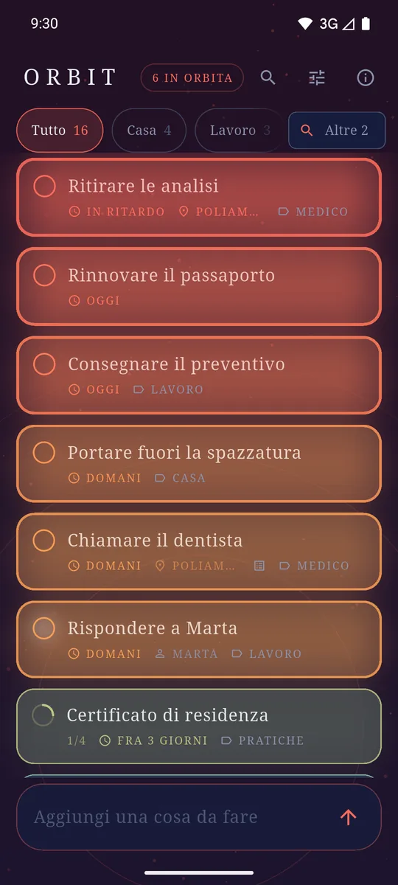
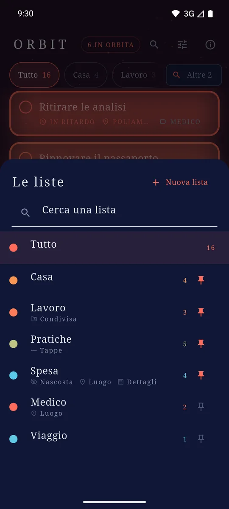
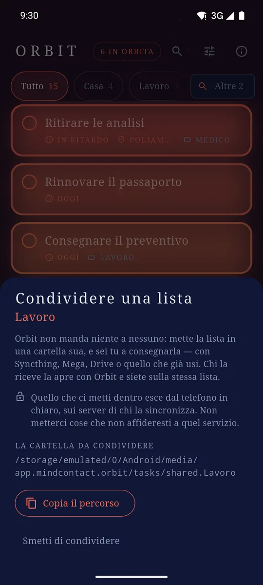
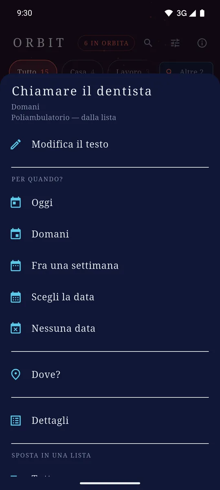
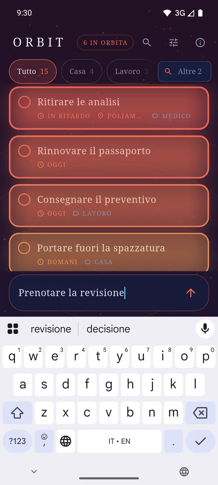

ItalianoEnglish
Give an entry a deadline or a place, and from then on it moves by itself: it warms up, its border thickens, it climbs the list as the day or the place gets closer. The sky behind the list moves with it. There is nothing to sort by hand — what presses hardest is at the top.

What presses hardest is at the top. The colour is the deadline, not a label. 
A list per thing, and the two or three you live in stay in sight. 
A shared list: you can see who touched what, and the place covers them all. 
Date, place and list of an entry: one long press and it is all there. 
The add field sits at the bottom, where your thumb already is.
What it does
- It opens ready. The add field is under your thumb: no account, no sign-up, no welcome screens.
- Deadlines you can feel. A date is not a label, it is a value that moves — and the last day weighs more than the first six put together.
- Places. An entry can belong to a place and speak up when you pass near it. The system watches that circle, not the app: Orbit does not follow you around.
- More than one list, each with a deadline and a place of its own that everything inside inherits: "Shopping" knows where the supermarket is once instead of twenty times.
- Reminders at the date you set, and home-screen widgets — one per list, each with its own +.
- Quick add from the notification shade: type, and the entry is in the list without opening the app.
- In English and Italian, following the language of the phone.
A list can be shared
Sharing a list, in Orbit, means exactly one thing: that list gets a folder of its own, and you hand the folder over — with Syncthing, Mega, Drive, whatever you already use. There is no invitation to send, no code, no server of ours in between: whoever receives the folder opens it with Orbit, and you are on the same list. What the other person just touched arrives lit, and fades over hours.
The price is written in the app before the tap, and it is worth repeating here: the files of a shared list leave the phone in plain text, carried by the service you chose.
Your data stays yours
What you write is saved as files on the phone, one per entry. There is no Orbit server and no account: nothing you write is sent to us. If you keep that folder inside a synchronisation service you already use, it is that service that copies it between your devices — and the format is built so that two disconnected phones do not spoil each other's data.
How it pays for itself
One banner anchored at the bottom, and that is all: no ads inside the list, no subscription, no feature held hostage.
Where to find it
Not on Google Play yet. The link will appear here when it is.